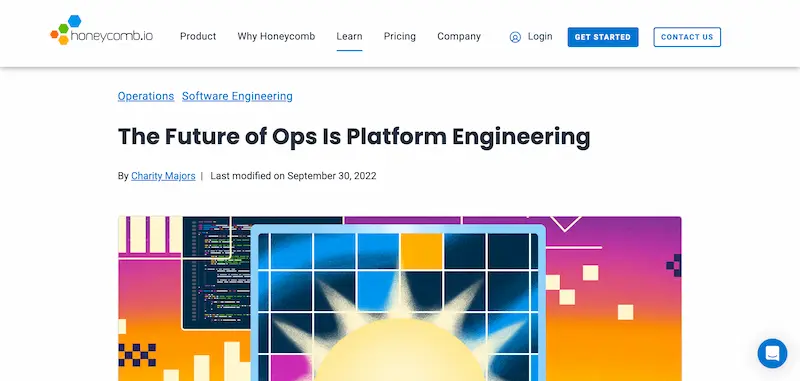
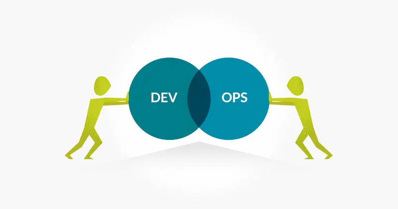

转载：运维的未来是平台工程
作者：阮一峰
互联网公司有一个重要工种，叫做”运维”。

“运维”的英文是 Operations，简写为 Ops，直译就是”操作”，指的是各种服务器操作。
简单说，运维工程师就是管理服务器、保障代码运行环境的人。
这是很重要的工作，公司理应非常重视。但是实际上这几年，运维岗位一直在缩减，Ops 工程师被要求转型 DevOps 工程师。据我知道，很多运维工程师其实很苦恼。
应该怎么看待这种变化？运维有没有前途？将来会怎么发展？

最近，我读到一篇老外的文章，标题就叫《运维的未来是平台工程》。
“The future of Ops is platform engineering.”

作者系统地回答了上面这些问题，认为运维最终将会消失，演变成一种新的工种—-“平台工程”（platform engineering）。
我觉得他的文章很有启发，让我对运维的看法清晰了很多，分享给大家。
一、运维的由来
最早的时候，并没有运维，程序员同时负责编写和运行软件。
但是，编写软件和运行软件，其实是两种不同的技能：前者需要熟悉代码，后者需要熟悉服务器。
互联网软件发展起来以后，这两种技能就逐渐分家了。
开发工程师负责编写代码，运维工程师负责运行代码（即保障服务器运行环境）。
二、运维的衰落
事实证明，开发和运维分家是一个巨大的错误。
写代码的人不了解服务器环境，管理服务器的人不了解代码在干什么，这样不利于做出优秀的产品，也不利于排查问题。
因此，有些公司就推动，开发与运维重新合在一起：编写软件的人也要负责运行软件。
这就是 DevOps 的由来，它等于 Dev（开发）+ Ops（运维）。

另一方面，互联网公司的核心资产和竞争力，更多的是代码，而不是运维。所以，公司也有意愿，把更多的力量投入在开发上，逐步压缩专门的运维团队，积极外包尽可能多的基础设施。
这两方面因素决定了，运维作为一个单独的工种，正在逐渐消失。
三、DevOps 的问题
但是，DevOps 实际上没有办法取代运维。
越来越复杂的业务，注定了系统和基础设施也越来越复杂，同时还必须稳定可靠。
普通的开发工程师，根本不可能做到这一点。他既不了解所有基础设施，也达不到专业运维的系统管理水平。
这种情况下，公司就会选择外包，采购外部的云服务，把基础设施外包给专业的云服务商， 最大化压缩自身成本。
四、运维的职责
虽然总体上，运维是管理服务器，但是可以细分成两方面的职责：构建基础架构 + 管理运行环境。
“构建基础架构”指的是硬件的采购、安装、上架、联网这些工作。
“管理运行环境”指的是保障业务软件的运行。
DevOps 出现后，”构建基础架构”这一职责逐渐消失，变成了采购云服务，”管理运行环境”这一职责则是转给了 DevOps 工程师。
于是，新的问题出现了：谁负责采购和整合云服务？
五、平台工程是什么
采购合适的云服务，并不是一件简单的事情。
云服务纷繁复杂，各种 API、SDK 和配套工具令人眼花缭乱，即使经验丰富的运维工程师也不容易说清楚。
因此，需要有专职人员来做出正确决策，选择一套满足需要的云服务，并且负责编写工具，整合所有采购来的云服务，供业务开发使用。
这种角色就叫做平台工程，他负责评估、采购、整合各种云服务，作为自身的基础设施，并在外部云服务基础上构建自己的平台，让开发工程师能够在其上自助服务，将自己的代码投入生产。
上面的定义有几个要点。
（1）基础设施是外包的，以求成本和开发周期最小化。
（2）平台工程师负责整合外包的基础设施，构建成一个平台。
（3）开发工程师在该平台上，自主搭建和管理运行环境，自己运行代码。
六、平台工程与运维的区别
平台工程与运维，存在几个显著区别。
（1）平台工程需要开发软件，包括编写测试和代码审核，团队的运作方式很像开发团队，有产品经理、甚至设计师和前端工程师。
运维一般不开发应用软件，最多就是写一些自动化脚本。
以前，有的工程师写代码，有的工程师跑代码。今后，所有工程师都编写代码，并且运行自己的代码，不管你是开发工程师、DevOps 工程师或者平台工程师，不同之处只在于按层或功能划分的职责范围不同。
（2）平台工程是云原生的，所有工作都存在于云上。
运维不是云原生的，需要自己管理硬件，只能说是支持云的。
（3）平台工程采购云服务，运维采购的是硬件。
七、运维工程师的出路
随着传统的运维角色的消失，现有的运维工程师必然面临着转型，不外乎有三种出路可以选择。
（1）如果喜欢开发业务软件，可以选择成为 DevOps 工程师。
（2）如果喜欢开发平台软件，可以选择做平台工程，专注于基础设施的整合。
（3）如果更喜欢硬件和底层，可以选择加入”基础设施即服务”（IaaS）的云公司，深入研究基础设施。
（完）